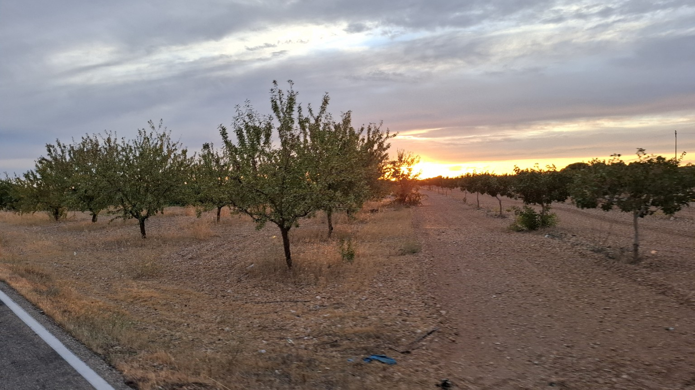
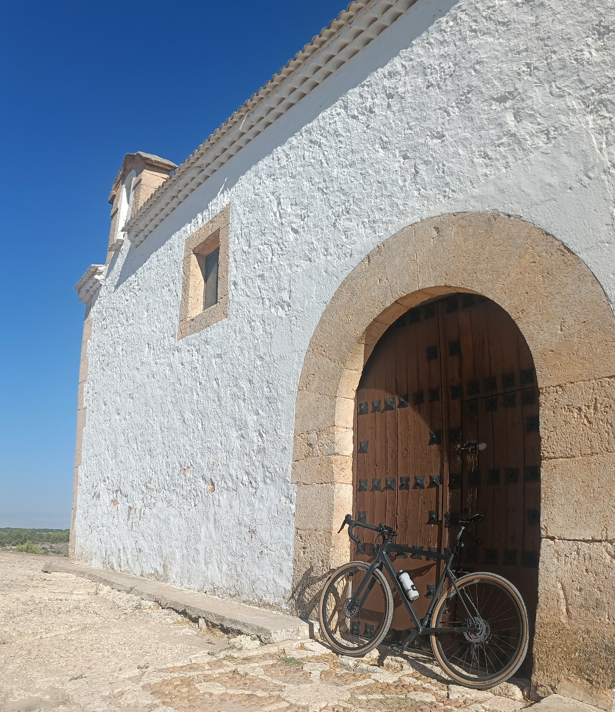
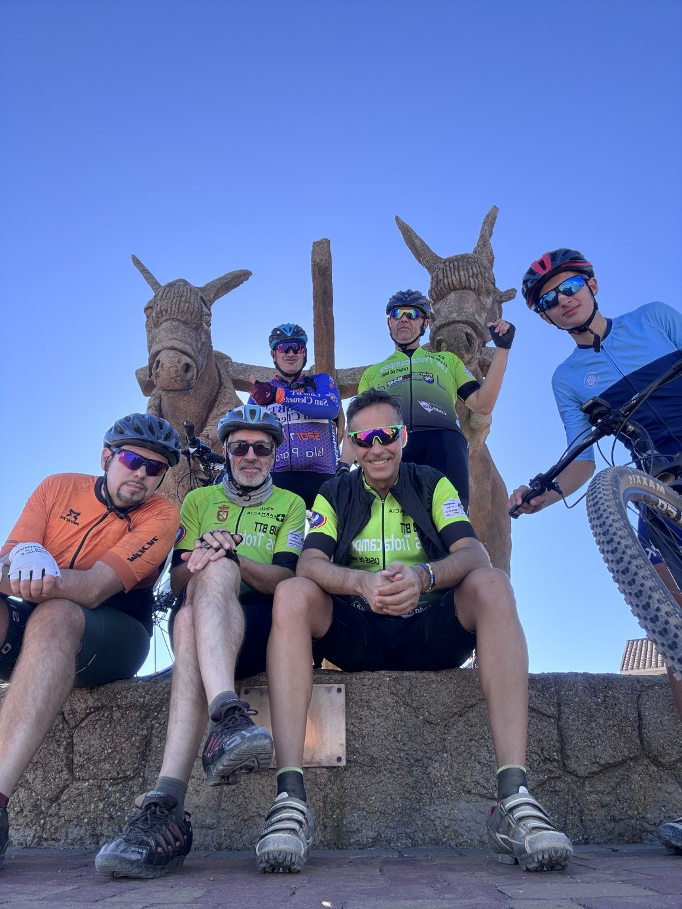
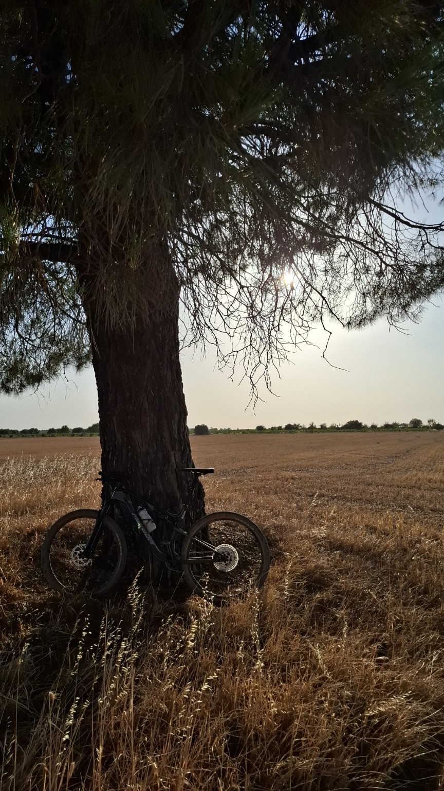

Kilómetros y recuerdos
Galería BTT de Casas de Haro
Ciclismo en Casas de Haro: polvo, amaneceres, rutas BTT, caminos manchegos y lugares que reconocemos con una sola mirada.





Ciclismo en Casas de Haro: polvo, amaneceres, rutas BTT, caminos manchegos y lugares que reconocemos con una sola mirada.



